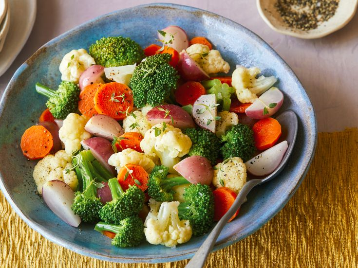

Vegetable Medley

This is very nutritious.
165 HEALTH
74 ENERGY

Ingredients
- 4 cups mixed blanched and refreshed vegetables, such as broccoli florets, cauliflower florets, carrot rounds, green beans, or radish quarters, procedure follows
- 2 tablespoons unsalted butter
- 2 tablespoons water
- Kosher salt, freshly ground black pepper
Process
- Subeadline. Notes.
Notes: Additional info.
Source